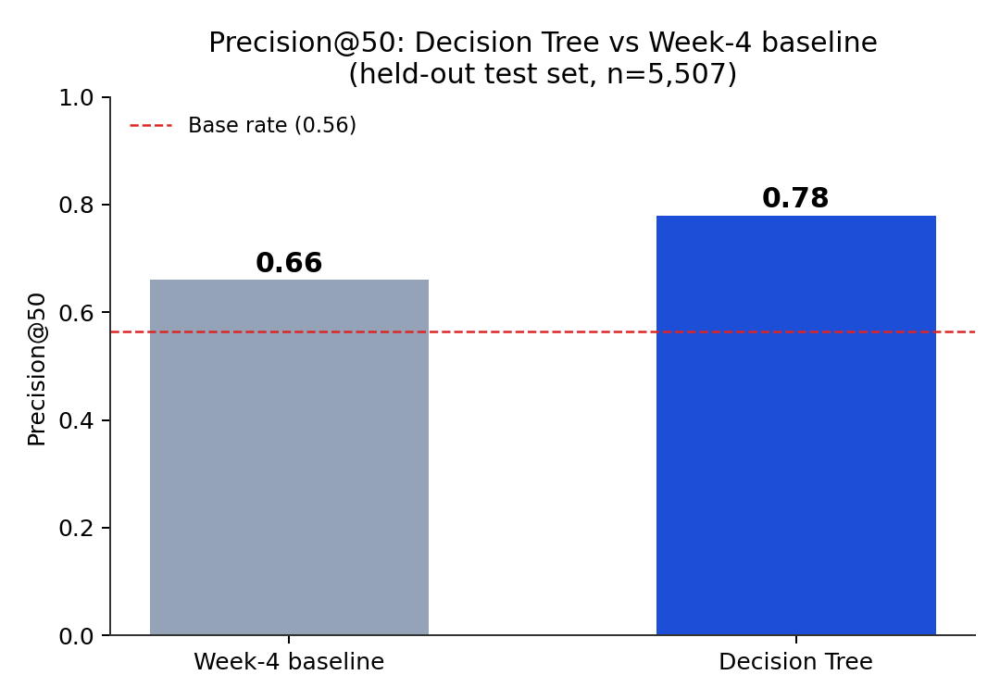
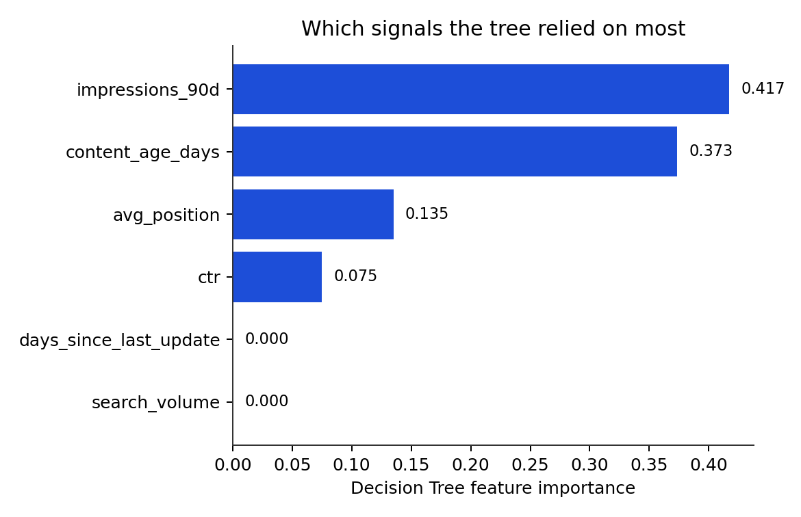
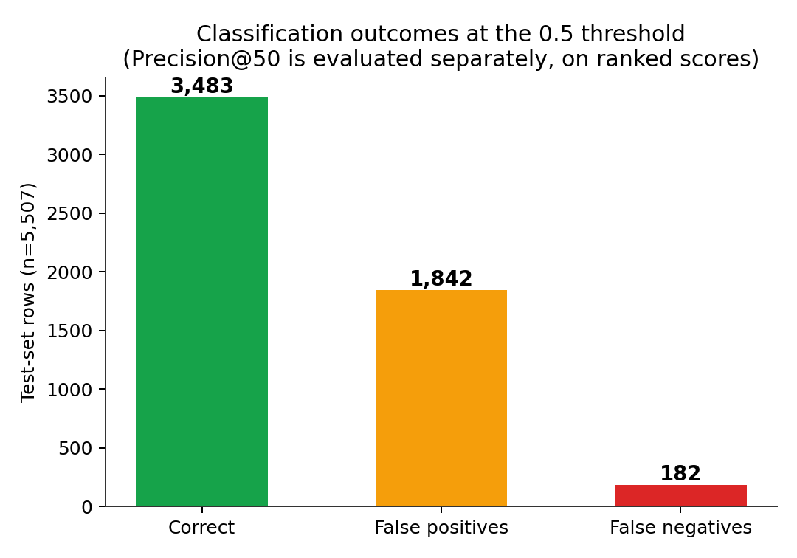
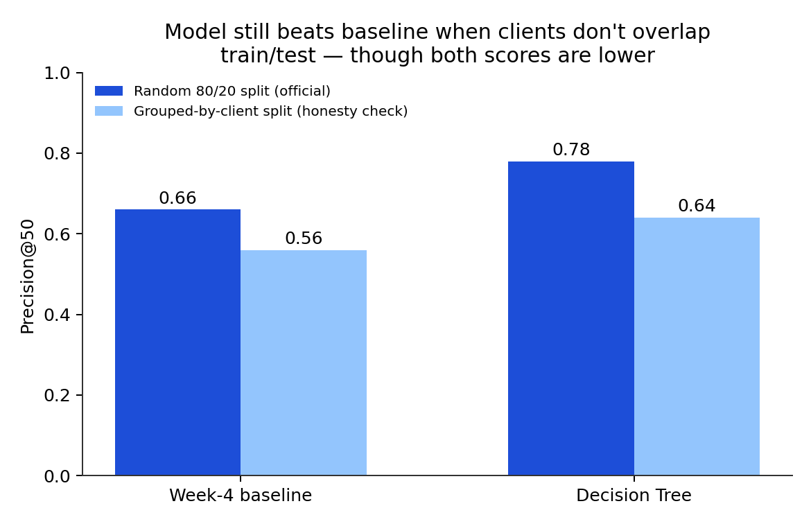

Content refresh prioritization · a FlyRank ML internship capstone
Can a small set of observable content and search signals help a content team decide which pages to review first? A shallow Decision Tree is compared, honestly, against a transparent rule-based baseline — same data, same split, same metric.
Content teams can't manually review every page on a site, so this project asks whether observable signals — how stale a page is, how much search visibility it has, its click-through rate and age — can rank pages by how likely they are to be in a declining search-performance trend. Using an anonymized FlyRank dataset of 27,532 content pages with six such signals, a shallow (depth-3) Decision Tree was trained and compared against a transparent staleness-and-volume rule on the same held-out 20% test split. The Decision Tree reached a Precision@50 of 0.78, against 0.66 for the rule-based baseline and a 0.56 base rate — meaning that among the 50 pages it ranked most likely to be declining, 39 were actually declining, versus 33 for the baseline rule. The result held, at a smaller margin, under a stricter validation split grouped by client. This is offered as a decision-support ranking aid for prioritizing human review, not as a claim about causality or about how Google's ranking algorithm works.
A content team responsible for hundreds or thousands of pages can't read every one before deciding what to refresh. Someone has to decide where to start. A simple approach is a rule of thumb — flag pages that are old and haven't been touched in a while — but a rule like that treats every stale page the same, whether or not it's actually losing search performance.
This project asks a narrower, more answerable question: on a page-level dataset with observable content and search signals, can a small learned model rank pages by likely decline better than a transparent hand-written rule, using the same evidence a content team already has access to? The output is meant to sit in front of a human reviewer — a ranked list to work through, not a system that edits or removes pages on its own. A wrong call here mostly costs review time, not published content, which is why a ranking aid — rather than an automated action — is the right shape for this problem.
The analysis uses the anonymized FlyRank internship starter dataset: 30,000 rows, one per pseudonymized content page across 32 clients, with 44 columns of trailing 90-day content and search metrics. No client names, domains, URLs, or raw queries appear in the dataset or anywhere in this analysis.
The dataset does not ship a ready-made decline label. One is derived from an existing
trend field: is_declining = (trend_direction == "down"). Because the label is
built from trend_direction, that field and the related
trend_pct are excluded from the model's inputs — using them as features would
let the model see the answer.
After selecting six feature columns plus the target and dropping rows with any missing value among them, 27,532 of the original 30,000 rows remain. 15,525 of those (56.4%) are in the declining group — this is the base rate that any ranking result should be read against.
Six observable signals, all available at decision time:
| Feature | What it measures |
|---|---|
days_since_last_update | staleness |
impressions_90d | search visibility |
search_volume | demand for the topic |
avg_position | average search ranking position |
ctr | click-through rate |
content_age_days | how long the page has existed |
Excluded on purpose: trend_direction and
trend_pct (label leakage); content_id and
client_id (pseudonymous identifiers, used only for grouping in the validation
check below, never as predictive features).
A transparent rule from the earlier stage of this project: one point if a page's staleness is at or above the dataset median, one point if its 90-day impressions are at or above the median. Score 0–2. It uses no label-derived information and is easy for a reviewer to audit by hand.
A DecisionTreeClassifier with max_depth=3, fixed
random_state=42. A shallow tree was chosen deliberately over a more complex
model: it can be printed and read by a person, it captures non-linear thresholds a linear
rule can't, and the small depth limits overfitting on six features.
The official result uses an 80/20 stratified train/test split
(random_state=42, stratified on the target), evaluated once on the held-out
20%. This is a single random split at the row level — not grouped by client and not
time-aware — and Limitations discusses what that does and doesn't support.
Precision@50: of the 50 test pages the method ranks most likely to be declining, what fraction actually are. This mirrors the real decision — a reviewer works through a short list, not the whole dataset — better than overall classification accuracy would.
Same test split, same metric, for both methods:
| Method | Precision@50 |
|---|---|
| Base rate (majority class) | 0.56 |
| Week-4 rule-based baseline | 0.66 |
| Decision Tree (depth 3) | 0.78 |
That's a +0.12 absolute gain over the baseline — an 18.2% relative improvement — and both methods clear the 0.56 base rate comfortably.

| Feature | Importance |
|---|---|
impressions_90d | 0.417 |
content_age_days | 0.373 |
avg_position | 0.135 |
ctr | 0.075 |
days_since_last_update | 0.000 |
search_volume | 0.000 |
The tree relied most heavily on 90-day impressions and content age. That's directional information about what the tree found useful for splitting this data — it does not mean either variable causes decline, or that changing one would reverse it.

Precision@50 evaluates the top of a ranking; it's a different question from ordinary classification accuracy. At a standard 0.5 probability threshold, across all 5,507 test rows: 1,842 false positives (33%) and 182 false negatives (3%). The model over-flags more than it under-flags at this threshold — consistent with using it as a review queue rather than an automatic action list, where a false positive costs a few minutes of review and a false negative delays attention to a page that needed it.

What this work cannot claim, stated up front rather than left for a reader to find:
is_declining comes from an existing trend_direction field. This is a directional modeling exercise, not an independent measurement of decline.
Based on the actual test-set behavior above, not a generic playbook.
72% of the top 50 model-ranked test pages were actually declining — well above the 56% base rate, but far from certain. Every flagged page still needs a human look before anything changes.
54% of the top-50 ranked pages have below-median CTR. A visible page with weak CTR is a reasonable candidate for a metadata or search-snippet review — this is a pattern in the data, not a guarantee that fixing CTR reverses decline.
Only 16% of the top-50 ranked pages have above-median content age — the model's top picks skew younger, not older, in this dataset. Content age is a strong overall signal, but "older is worse" isn't a safe standalone screening rule here.
52% of the top-50 ranked pages have above-median impressions. These aren't obscure corners of the site — a successful refresh on a flagged page has a reasonable chance of affecting meaningful search traffic.
Given the 33% false-positive rate and the gap between the random-split and grouped-split results, treat this as a recurring aid: re-run it against current data, spot-check a sample of flagged and unflagged pages each cycle, and retrain if the client mix shifts substantially.
Every number on this page comes from a committed notebook run, not manual entry.
The official Precision@50 result (0.66 → 0.78) was first produced in
work/notebooks/w05_model.ipynb
and is reproduced, alongside the supplementary grouped-split check and this page's charts, in
work/notebooks/capstone.ipynb.
Random seed 42 is fixed throughout. The metric receipts backing every figure
and table on this page are committed at
work/outputs/capstone_results.json.
To reproduce: clone
the repository,
install requirements.txt, and run the capstone notebook top to bottom — it
loads the bundled anonymized CSV directly, no private data or credentials required.